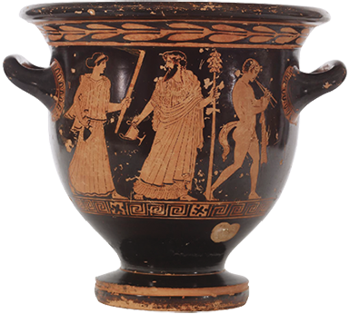
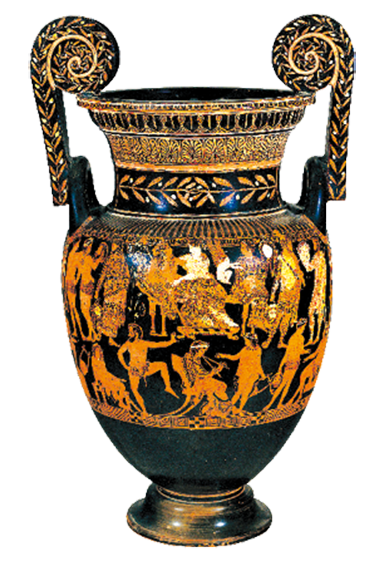
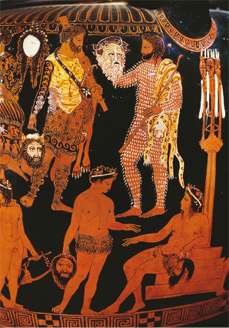
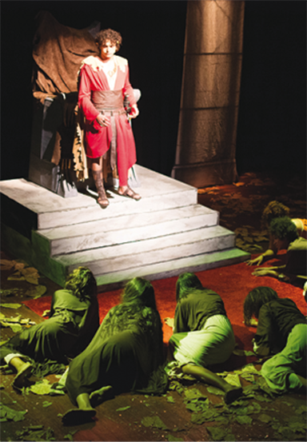

As origens do teatro sempre foram objeto de muitas especulações, assim como há muitas hipóteses sobre o nascimento das demais linguagens artísticas. Entretanto, a maior parte dos estudiosos concorda em dois pontos: primeiro, o ser humano apresenta, desde tempos remotos, uma inclinação para o jogo dramático, com um profundo anseio para “ser outro” por meio do disfarce ou da representação, seja de si mesmo, seja de animais, seja de deuses etc.; segundo, ao que parece, esse jogo teatral surgiu vinculado aos rituais religiosos e mágicos de povos primitivos.
Não se sabe ao certo quando a humanidade passou de um estágio “instintivo” de teatro para a forma elaborada, já presente na Antiguidade em várias civilizações ao redor do mundo. Neste capítulo, estudaremos o teatro clássico grego – que influenciou muito o desenvolvimento do teatro no Ocidente e que continua a exercer fascínio na atualidade.
- O que é teatro?
- Quais são alguns dos princípios fundamentais dessa arte?
- Como o teatro e sua arquitetura se desenvolveram no período clássico da Antiguidade grega?
- Em que consiste o teatro de animação?
Neste capítulo, serão abordadas as habilidades EM13LGG601, EM13LGG602, EM13LGG603 e EM13LGG604.
Mosaico romano, século II d.C., em que há duas máscaras teatrais.
A imagem é de um mosaico romano, do século II d.C., em que são representadas as máscaras de teatro. A máscara feminina tem olhos grandes e boca escancarada, com uma expressão de espanto. As características fisionômicas da máscara masculina são exageradas e de escárnio: a boca é enorme, o nariz é grande e achatado, os olhos estão arregalados e as bochechas, enrugadas. Na cabeça, há uma coroa de hera e cachos de uva, ornamento associado ao culto de Dioniso, que estava intimamente ligado ao nascimento do teatro grego. Era muito comum a representação de deuses e deusas nos teatros grego e romano.
- Por que você acha que os povos da Antiguidade representavam seus deuses?
- Que motivo pode ter levado alguém a querer “ser outro” por meio da representação teatral? Explique.
- Que elementos você considera importantes para a existência do teatro? Por quê?
Primeiras manifestações do teatro na Grécia Antiga
Na mitologia grega, Dioniso é o deus da colheita da uva, do vinho, do êxtase ritualístico ou religioso, da fertilidade e do teatro. O vinho desempenhou um papel importante na cultura grega, sendo comum, no culto religioso a Dioniso, o consumo desregrado da bebida. As primeiras imagens do culto a Dioniso, conhecido como Baco pelos romanos, apresentam um homem maduro, barbado e vestido, como a figura reproduzida no vaso grego que ilustra este texto. Ele tem na mão um cajado entrelaçado com hera e ramos de videira, arrematado por uma pinha. Tal cajado também é conhecido como tirso. Imagens posteriores a essa mostram Dioniso como um jovem andrógino, sem barba, sensual, nu ou meio nu. Na literatura, ele é muitas vezes descrito como “mulherengo”.
Na Atenas Antiga, foi criado um festival chamado Grande Dionisíaca em homenagem a Dioniso. O evento central era um espetáculo em que eram recitados ou cantados os ditirambos, isto é, poemas líricos interpretados por um coro de diversos homens, muitas vezes usando máscaras e vestimentas alegóricas imitando um sátiro. Os ditirambos eram recitados pelo coro de modo uníssono, como se fosse uma única voz. O coro também dançava ao som da música.
Em 534 a.C., porém, ocorreu algo inédito. Um cidadão chamado Téspis resolveu improvisar. Do alto de um carro da procissão em homenagem a Dioniso, ele começou a dialogar com o coro como personagem solista. Não se sabe ao certo o que ele falou na ocasião, mas acredita-se que tenha representado o próprio deus, afirmando que era ele esse deus, e o povo entrou no jogo. As origens do teatro no Ocidente devem muito a esse episódio, pois foi a partir de então que se criou o papel de respondedor, ou corista principal, denominado posteriormente de ator.
Teatro: uma linguagem de cumplicidade
Quando refletimos sobre o que é teatro, deparamo-nos com difíceis questões e com muitas variáveis. De modo geral, podemos dizer que estão reunidos alguns dos elementos essenciais do teatro quando uma ou mais pessoas, situadas em um espaço específico, apresentam – ou seja, representam – o comportamento de um personagem em dada situação por meio de gestos e palavras ou pela imobilidade e pelo silêncio. Nesse ambiente, há uma ou mais pessoas que observam essa apresentação/representação, sabendo que se trata de uma reprodução/imitação, fiel ou não, da realidade ou de uma imagem da fantasia improvisada ou previamente ensaiada. Porém, é fundamental que haja uma cumplicidade entre os que apresentam/representam – incorporando emoção e razão em um ato de entrega – e os que observam, de modo que tanto apresentadores quanto observadores tenham consciência de que se trata de uma representação. Essa relação entre o ator, o objeto artístico criado no espaço cênico e o público é fundamental para o teatro, que expressa o que é inerente à sociedade em que as peças são criadas. Ele exprime o medo, a angústia, o contentamento e todos os sentimentos que fazem parte da realidade de uma sociedade.
Primeiras manifestações do teatro na Grécia Antiga
Na mitologia grega, Dioniso é o deus da colheita da uva, do vinho, do êxtase ritualístico ou religioso, da fertilidade e do teatro. O vinho desempenhou um papel importante na cultura grega, sendo comum, no culto religioso a Dioniso, o consumo desregrado da bebida. As primeiras imagens do culto a Dioniso, conhecido como Baco pelos romanos, apresentam um homem maduro, barbado e vestido, como a figura reproduzida no vaso grego que ilustra este texto. Ele tem na mão um cajado entrelaçado com hera e ramos de videira, arrematado por uma pinha. Tal cajado também é conhecido como tirso. Imagens posteriores a essa mostram Dioniso como um jovem andrógino , sem barba, sensual, nu ou meio nu. Na literatura, ele é muitas vezes descrito como “mulherengo”.
Na Atenas Antiga, foi criado um festival chamado Grande Dionisíaca em homenagem a Dioniso. O evento central era um espetáculo em que eram recitados ou cantados os ditirambos, isto é, poemas líricos interpretados por um coro de diversos homens, muitas vezes usando máscaras e vestimentas alegóricas imitando um sátiro . Os ditirambos eram recitados pelo coro de modo uníssono, como se fosse uma única voz. O coro também dançava ao som da música.
Em 534 a.C., porém, ocorreu algo inédito. Um cidadão chamado Téspis resolveu improvisar. Do alto de um carro da procissão em homenagem a Dioniso, ele começou a dialogar com o coro como personagem solista. Não se sabe ao certo o que ele falou na ocasião, mas acredita-se que tenha representado o próprio deus, afirmando que era ele esse deus, e o povo entrou no jogo. As origens do teatro no Ocidente devem muito a esse episódio, pois foi a partir de então que se criou o papel de respondedor, ou corista principal, denominado posteriormente de ator.
Autor desconhecido. Vaso com cenas dionisíacas, c. 440 a.C., pintura em cerâmica. The Walters Art Museum, Maryland, Estados Unidos.
The Walters Art Museum, Maryland
Seja Téspis
Você já pensou em como uma ação simples, como a de Téspis, pode mudar o rumo da história? Em nossa época, saímos do disco de vinil, passamos pelo CD, pelo arquivo mp3 e agora temos aplicativos que fornecem músicas em streaming.
- Pense em algo que você faria de diferente no mundo da Arte, seja em tecnologia, seja em metodologia dos espaços virtuais ou físicos. Que proposta você apresentaria? Explique aos colegas.
Téspis deixou seu nome na história e um grande legado, tendo sido inúmeras vezes homenageado. Nessa ópera cômica de 1871, por exemplo, a história segue uma trupe de atores encabeçada pelo lendário Téspis, que temporariamente troca de lugar com os deuses no Monte Olimpo, os quais envelheceram e passaram a ser ignorados.
A máscara grega
O teatro grego ficou muito conhecido pelo uso de máscaras. As primeiras evidências do uso delas na Grécia Antiga vêm de algumas pinturas de vasos do século V a.C., como o vaso Pronomos, que mostra atores se preparando para uma peça de sátiro.
Sergio Anelli/ Mondadori Portfolio/AGB Photo Library
Vaso Pronomos, de 400 a.C., com a representação de atores segurando máscaras de uma peça.
DEA/G. NIMATALLAH/Getty Images
Dois gêneros se tornaram muito populares na Grécia Antiga: a comédia e a tragédia. As máscaras tinham feições diferentes conforme a sua utilização em um gênero teatral. Na comédia, elas costumavam ter expressões grotescas, engraçadas, exageradas; na tragédia, representavam emoções como a dor ou a ira e, por isso, tinham, muitas vezes, expressões distorcidas.
Apesar de as máscaras representarem estados de espírito, acredita-se que eram usadas como forma de expor a natureza dos personagens e seu status social, ou seja, características que não são passageiras, como é o caso das emoções. Assim, elas não eram usadas para mostrar a mudança de humor dos personagens.
Reis, escravos, pobres e ricos tinham, cada um, um tipo de máscara. Como, geralmente, havia um pequeno número de atores em cena, era necessário que eles trocassem com frequência as máscaras para interpretar os diferentes personagens. Além disso, os homens representavam os personagens masculinos e femininos, pois apenas eles podiam atuar no teatro grego. As máscaras eram feitas de materiais perecíveis, como couro, tecido e madeira. Em termos técnicos, a função da máscara era ampliar a voz dos atores.
Você já pensou sobre o uso das máscaras na atualidade?
Carole Raddato (CC BY-SA-2.0)/Wikimedia Commons

DFLC Prints/Shutterstock.com
Marie-Lan Nguyen/Wikimedia Commons/Museu do Louvre

Daderot/Wikimedia Commons/Fitchburg Art Museum
Lefteris Papaulakis/Shutterstock.com
Máscaras
- Elenque alguns motivos pelos quais as pessoas usam máscara no dia a dia.
- Cite personagens famosos que usam máscara. Sabe dizer por que eles a usam?
- Você conhece alguma máscara que seja famosa (na história, na literatura, no cinema etc.)? Para que ela foi usada?
- Nos últimos anos, a sociedade vivenciou uma pandemia em que o uso de máscara foi obrigatório praticamente em todos os países do mundo. Como foi para você essa experiência? Como foi para seus familiares a aceitação de uma rotina imposta com esse novo "acessório"? Que sentimentos isso lhe causava?

lobusYeti/iStockphoto.com, Tayvay/Shutterstock.com, JRP Stud
io/Shutterstock.com, OlegD/Shutterstock.com, Ariwasabi/Shutterstock.com

Teatro de Dioniso, em Atenas.
David H.Seymour/Shutterstock.com
Heinz-Dieter Falkenstein/Agefotostock/AGB Photo Library
Liszt/UIG/Fotoarena
À esquerda, ilustração da estrutura de um teatro grego. À direita, a planta baixa (desenho arquitetônico que mostra uma edificação vista de cima, com elementos cortados horizontalmente) do Teatro de Dioniso.
... a Acústica é um dos ramos da Física que lida com o estudo de todas as ondas mecânicas e sua ação em gases, líquidos e sólidos, incluindo tópicos como vibração, som, ultrassom e infrassom. Aquele que trabalha no campo dessa ciência é conhecido como cientista acústico, e quem trabalha na área de tecnologia acústica é chamado de engenheiro acústico.
Tragédia e comédia: duas faces do ser humano
Se observarmos à nossa volta, grande parte das experiências que vivemos pode ser traduzida em tragédias e comédias. Mas que significados tinham esses termos para o teatro grego? Apenas os textos de três autores de tragédias do século V a.C. chegaram até nossos dias, porém a riqueza dessas criações é tão extraordinária que elas continuam a ser encenadas em diversos países ao redor do mundo. Esses autores, conhecidos como dramaturgos, foram Ésquilo (525 a.C.-456 a.C.), Eurípedes (c. 480 a.C.-406 a.C.) e Sófocles (c. 496 a.C.-406 a.C.).
Encenação da tragédia Édipo Rei, de Sófocles, realizada pelo diretor inglês Sir William Tyrone, em 1957.
Granger, NYC./Alamy/Fotoarena
Tragédia: um aprendizado difícil
Escritas em versos, as tragédias contavam com personagens como deuses, semideuses, heróis, reis e homens comuns. Eles eram marcados por atos de bravura, um traço de caráter acentuado, uma ação que teve impacto sobre a comunidade etc. As histórias trágicas têm como elemento de transição reviravoltas na vida de um ou mais personagens, causadas por emoções, paixões, necessidade de poder, destino, entre outros motivos. Com essa transformação, o personagem, ou um grupo deles, passa da alegria para a tristeza ou o inverso, o que foi denominado peripécia. Nesses casos, os personagens podiam, por exemplo, sofrer os reveses por uma série de enganos ou erros cometidos em sua trajetória. Era comum ver os personagens trágicos em situações nas quais se tornavam vítimas do destino e dos deuses.
O herói era o personagem central das tragédias. Ele era um semideus ou uma semideusa, isto é, uma figura cujo corpo era metade humano e metade deus, filho ou filha de um deus ou uma deusa com um ou uma mortal. Essa condição de semideus tornava-o capaz de realizar feitos sobre-humanos, equiparados aos dos próprios deuses. Entretanto, em sua jornada, os heróis e as heroínas sempre tinham de enfrentar as leis inexoráveis do destino, e essa luta tinha um fim, de alguma forma, trágico. Dessa maneira, os deuses mostravam seu poder sobre os demais seres, muito embora, assim como os humanos, também tivessem falhas de caráter, uma vez que refletiam os humanos.
Um dos elementos fundamentais da tragédia era o coro, constituído por um grupo de pessoas que teciam comentários, apresentavam reflexões ou falas da peça. O coro podia usar esses artifícios até para explicar eventos passados na história.
O conflito moral levava heróis ou heroínas a reconhecer suas falhas ou a proceder de modo arrogante, orgulhoso, violento ou insolente (o que era chamado de hybris), despertando a ira dos deuses, que aplicavam punições pelo mau comportamento. A hybris é uma das marcas do herói clássico, que assumia as consequências de suas ações. Assim, a tragédia tinha como função a formação moral.
Além da hybris, do coro e da peripécia, outro elemento marcante das tragédias era a catarse, que ocorria quando o espectador mostrava solidariedade com as grandes dificuldades sofridas pelo herói ou pela heroína, identificando-se com a dor dele(a). A catarse podia ter um efeito liberador no espectador quando este sentia piedade, comoção ou terror em relação ao herói ou à heroína.
Édipo Rei, de Sófocles, em montagem realizada no Teatro Deodoro, em Maceió, em 2017.
Foto: Thiago Acioly. Espetáculo Édipo Rei. Direção Cleyton Alves. Maceió: Teatro Deodoro, 2017/Acervo do Instituto de Preparação para Cena.
Tragédia grega é um gênero do teatro da Grécia Antiga e não deve ser confundido com o senso comum da palavra “tragédia” nem com o estilo cinematográfico chamado “drama”.
Comédia: a ironia e a intriga no cotidiano grego
As comédias traziam para o cotidiano dos gregos antigos a sátira (que zomba, ridiculariza ou faz ironia) dos fatos da vida diária. As primeiras comédias gregas (chamadas de “comédia antiga”) foram criadas cerca de 50 anos após o aparecimento das primeiras tragédias. Entre os autores que mais se destacaram no gênero estão Aristófanes (448?-380? a.C.), de quem apenas 11 peças chegaram aos dias atuais, e Menandro (342?-291? a.C.), de quem conhecemos somente uma peça. Do mesmo modo que nas tragédias, as máscaras eram fundamentais também para esse gênero.
No início, na época de Aristófanes, as comédias apresentavam como elementos principais a crítica à sociedade e à política, as obscenidades e a imitação de alguém ou de alguma situação de modo divertido, debochado. Muitas das comédias gregas que conhecemos foram adaptações feitas posteriormente pelos romanos. Em seguida, no século IV a.C., as comédias passaram por uma fase de censura, e não mais eram encenadas as críticas políticas e sociais. Nos séculos III e II a.C., os temas mais comuns eram as intrigas que se desenvolviam, entre outros tópicos, por meio de aventuras românticas, diferenças entre classes sociais, histórias de piratas e cenas do tipo pastelão. Essa última fase é conhecida como “comédia nova”.
Teatro de marionetes na Grécia Antiga
O teatro de animação é uma das formas mais antigas de teatro e envolve a manipulação de bonecos ou objetos, como fantoches (luvas), boneco de sombras (visível sob projeção da luz), boneco de vara (movimentos controlados por varas) etc. O teatro de animação apresenta em sua constituição três elementos básicos: o bonequeiro, o títere e o público. O bonequeiro cria o personagem por meio do objeto e estabelece com este uma relação artístico-afetiva. O títere também é comumente chamado “boneco”, contudo esse termo pode gerar confusão, uma vez que, no Brasil, não existe uma distinção entre a palavra “boneco” – que se refere a brinquedo – e o termo “boneco” – usado no teatro. A falta de distinção leva alguns autores a adotar o vocábulo “títere” para se referir ao boneco usado no teatro, como ocorre em outras línguas em que não existe essa diferença.
“Marionete” é o termo utilizado para os bonecos manipulados por fios. Existem poucos exemplos desse tipo de boneco oriundos da Grécia Antiga, talvez devido à pouca durabilidade dos materiais de que eram feitos. Da mesma forma, apenas algumas esculturas em relevo ou em vasos de terracota retratam objetos que podem ou não ser marionetes. Contudo, nas crônicas gregas, existem descrições de elaboradas apresentações com bonecos manipulados. O próprio filósofo Aristóteles (384 a.C.-322 a.C.) foi testemunha do alto nível de perfeição das marionetes gregas. Ele escreve que, pela simples manipulação de fios, as pequenas figuras podiam mover a cabeça, as mãos, os olhos e os ombros. Até o grande cientista Arquimedes (287 a.C.-212 a.C.) pôs o seu vasto conhecimento a serviço do aperfeiçoamento da arte de manipular marionetes, tamanha era a sua importância para os gregos.
Relevo do poeta Menandro com máscaras de comédia nova, século I a.C.-início do século I d.C. Mármore branco, 48,5 cm x 59,5 cm x 8,5 cm.
Dave & Margie Hill/Kleerup/Wikimedia Commons/Princeton University Art Museum
Escultura de uma possível marionete, c. 350 a.C.-320 a.C.
Rama (CC BY-SA-2.0)/Wikimedia Commons/Museu do Louvre
Catarse
Você já passou por alguma experiência de catarse ao assistir a uma série ou a um filme na televisão ou na internet? Que série ou filme? Como você se sentiu?
História mundial do Teatro, Margot Berthold. São Paulo: Perspectiva, 2001. Uma obra fundamental para quem deseja saber mais do teatro. Conta com mais de 500 imagens que apresentam o longo percurso dessa linguagem, que vai de tempos remotos da história da humanidade até a época contemporânea. O livro não trata a Grécia Antiga como o ponto de partida para o estudo do teatro, como ocorre em outras historiografias. A autora alemã parte do teatro primitivo, enfoca diversas tradições teatrais do Oriente, como a do Egito, a da China e a do Japão, e habilmente conduz o leitor até a época do teatro contemporâneo, com recursos eletrônicos e computacionais.

Reprodução
1
UEPB Uma das principais expressões da arte grega, o teatro, tem suas origens ligadas às Dionisíacas, festas em homenagem a Dioniso, deus do vinho.
MOTA, Myriam; BRAICK, Patrícia. História das cavernas ao Terceiro Milênio, 2002. p. 65
Dois gêneros clássicos do teatro grego originaram-se destes festivais, são eles:
- melodrama e tragédia.
- drama e pantomima.
- tragédia e drama.
- vaudeville e comédia.
- tragédia e comédia.
2
UEM-PR 2015 No teatro grego, a tragédia e a comédia eram os dois principais gêneros teatrais, sobre os quais é correto afirmar:
- 01. nas apresentações das tragédias, os atores usavam máscaras de couro, pano ou madeira. Além de auxiliar na amplificação da voz, a máscara também permitia que o mesmo ator fizesse mais de um personagem durante a peça, sem revelar sua identidade ao público.
- 02.as comédias eram valorizadas pois proporcionavam ao público de classe social menos favorecida momentos de diversão. Com esse intuito a comédiaconsagrou dramaturgos como Ésquilo, Sófocles e Eurípides.
- 04. nas tragédias, além dos atores, um elemento fundamental do espetáculo era o coro, formado por um grupo de pessoas que faziam comentários, reflexões ou falas para, inclusive, explicar acontecimentos anteriores.
- 08. na tragédia grega, a figura do herói é caracterizada por sempre cometer uma falha trágica que desencadeia o fio condutor do espetáculo. Esse recurso objetiva mostrar a falha de caráter inerente a todo ser humano.
- 16. tanto na comédia como na tragédia o ponto central era a improvisação. Era comum os atores pararem no meio das peças para falar diretamente ao público, pedir sua opinião e sugerir sua participação nelas.
- Soma:
3
UEM-PR Acerca do Teatro Grego é correto afirmar que:
- 01. Sófocles, autor de Édipo Rei, é considerado um dos mais importantes autores de comédia do período clássico, em que as peças eram representadas sobre tablados durante as celebrações dionisíacas.
- 02. a substituição do espírito comunitário da Grécia Clássica pelo sentimento individualista no período helenístico fez com que o coro, que geralmente desempenhava o papel do povo, assumisse também uma função secundária.
- 04.o Teatro de Epidauro é um exemplo típico da arquitetura dos teatros da Grécia Clássica, com sua arquibancada em semicírculo, construída na encosta de uma colina e reservada aos espectadores.
- 08. a ênfase maior no desempenho dos atores no período helenístico motivou a construção de teatros em que esses atores se apresentavam mais isolados do público. Além disso, o local destinado aos espectadores tornou-se mais compacto.
- 16. os teatros romanos ficaram famosos por desenvolverem sistemas que corrigiram as falhas acústicas presentes na arquitetura do teatro grego, como a deficiente acuidade auditiva das últimas fileiras de suas grandes arquibancadas.
- Soma:
Superação
UEM-PR 2015 O teatro ocidental tem em suas origens elementos e formas de sistematização oriundas do teatro grego. Sobre o teatro grego é correto afirmar:
- 01. A sociedade grega era pautada nos costumes, na filosofia, na arte, nas normas sociais e na política, a fim de prospectar uma sociedade ideal.
- 02. A principal especificidade das artes cênicas ao longo da história se caracteriza pela presença e pelo diálogo entre atores e público. Uma arte efêmera por natureza, que possibilita a relação direta entre o objeto artístico e o público fruidor.
- 04. As dionisíacas eram festivais organizados pelo estado grego para homenagear os deuses. Nesses eventos as companhias participantes eram formadas por atores das classes baixas, que apresentavam para um público constituído basicamente por nobres.
- 08. A tragédia tinha como função, além de proporcionar fruição estética inerente a qualquer produção artística, a formação moral grega.
- 16. Téspis foi considerado o primeiro dramaturgo da história do teatro grego. Sua produção passa por uma infinidade de comédias e tragédias que até hoje são encenadas em todo o mundo.
- Soma: